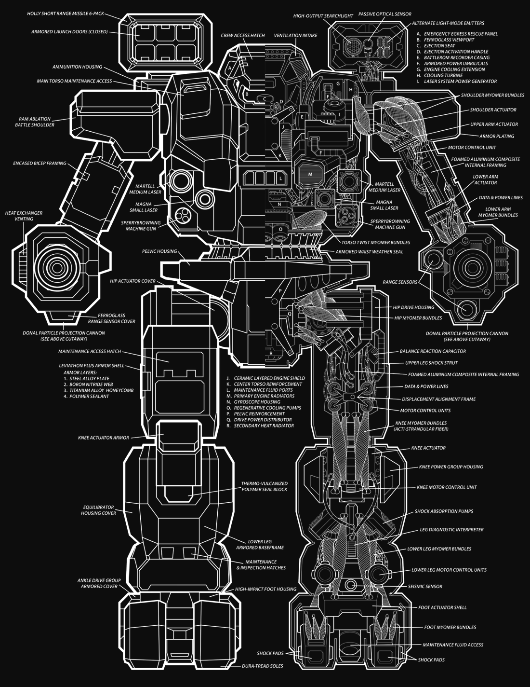

70 tons · Inner Sphere · 31 variants · 2515 to 3147
StarCorps put the Warhammer out in 2515 against a brief you could write on the back of a card: a mobile machine with enough firepower to wreck anything its own weight or under. That is it. That is the whole requirement. And for the next few centuries it did not so much meet the brief as define what a heavy BattleMech was.
It was a Gunslinger Program machine in the Star League years, and a lot of the names you know from the histories were sitting in one. Natasha Kerensky's Black Lady was a Warhammer. Yorinaga Kurita fought in one.
What you have got. Two Donal PPCs in the arms, which between them do roughly what an autocannon twenty does but from a great deal further out. Two Martell mediums and two Magna smalls, one of each in either side torso. A Holly six-rack over the right shoulder with fifteen reloads. And two Sperry Browning machine guns, because somebody sensible thought about infantry.
There is a searchlight over the left shoulder that most people never think about. It works as a searchlight, obviously, but it also ties straight into the O/P 1500 tracking system, which makes this thing a properly nasty night fighter. Nobody expects that from a design this old.
The heat, honestly. The old readouts say 18 single heat sinks let it fire and manoeuvre without worrying. That is nearly true. Two PPCs is 20 heat, walking is one more, and you dissipate 18, so you are 3 over each turn you work both barrels. You get three good turns before it bites, where a Marauder gets two. Real advantage, not a licence.
If you are picking a variant: the WHM-6D is the one I would sign out. The WHM-6Rb is flatly better if your era allows it. The WHM-9D is where the design finally stops fighting itself, and the WHM-9K is the best late one nobody talks about.
Seventy tons is enough to carry two particle cannons and still have room for a fight at close range, and light enough that a 280 keeps it at a genuine 64 kilometres an hour flat out. Most heavies pick a lane. This one refused to, and the brief is the reason: wreck anything its own weight or under, which means being ready for all of it.
Look at what is actually bolted on. Two Donal PPCs in the arms for the reach, and between them they land about what an AC/20 lands but from the other end of the field. Two Martell mediums and two Magna smalls, one of each in either side torso, for the middle distance. A Holly six-rack over the right shoulder for when somebody gets underneath your guns. And two Sperry Brownings with two hundred rounds in the centre torso, which exist for one reason and that reason is people on foot.
There is a weapon on that machine for every range on the board. That is why it lasted. A Marauder is a specialist and a very good one, but if the enemy closes it has a bad afternoon. A Warhammer changes which trigger it is pulling.
The bit nobody mentions is the searchlight over the left shoulder. It works as a light, fine. It also ties directly into the O/P 1500 tracking gear, which turns a three-hundred-year-old design into a very capable night fighter. The electronics on the whole machine are dated and simple and they keep working, which is also why it kept getting handed command jobs it was never specified for.
And on the quirk list: rugged, stable, ubiquitous. Three words that between them explain six centuries of service better than any stat block.
Two PPCs cost 20 heat between them. Walking costs one more. A 6R runs {ctx.hs_prose('WHM-6R')}, so you are {surplus_6r} over every turn you fire both and move.
| Turn | What you did | End heat | What it costs |
|---|---|---|---|
| 1 | Both PPCs, walk | {surplus_6r} | Nothing yet |
| 2 | Both PPCs, walk | {surplus_6r * 2} | Minus one walking MP |
| 3 | Both PPCs, walk | {surplus_6r * 3} | Minus two MP, plus one to hit |
| 4 | Both PPCs, walk | {surplus_6r * 4} | Minus three MP, plus two to hit, shutdown checks |
Three good turns of both barrels, where a Marauder gets two. The old readouts talk about eighteen sinks letting it fire and manoeuvre without concern, and that is close enough to true if you are sensible about it. The WHM-6D takes it to {hs_6d} sinks and a surplus of {surplus_6d}, which is near enough free that you stop thinking about it.

You will have this argument eventually so let us have it now. Both are twin-PPC heavies from the same era. On our Marauder page I said the Warhammer is the cheaper, cooler one and the Marauder is the tougher, longer-ranged one. That is still true and here are the numbers again from the other side.
A 6R is 70 tons at BV 1299 with 18 single heat sinks. A MAD-3R is 75 tons at BV 1363 with 16 single heat sinks. You save 64 Battle Value, you run 2 degrees cooler a turn, and you get short range missiles and machine guns the Marauder does not have.
What you give up is armour, 5 against 6 on the Alpha Strike card, and a point of long range damage. The Marauder hits harder further out and soaks more on the way in.
My honest answer after years of patching both: take the Warhammer if you expect the fight to close, and take the Marauder if you can dictate the range. And if you genuinely cannot decide, take a WHM-6D, which fixes the armour complaint and the heat complaint at the same time and costs less than a Marauder anyway.
It survived the Succession Wars for a reason nobody planned: there were Warhammer factories everywhere, across the Inner Sphere and out into the Periphery, and none of them made very many. Ronin Inc. at Wallis never managed more than five a year. Five. But there were a lot of Wallises, and a plant that turns out five a year is a plant that is very hard to bomb out of existence permanently.
When the Helm Memory Core came back, the Inner Sphere manufacturers started turning out Lostech variants. The Periphery did something more interesting and just kept building the original, for mercenaries and for whoever else turned up with money and no questions.
Then the best story in the chassis. After the Clan Invasion, StarCorps decided to modernise the old girl properly. The plan was one new variant out of the Crofton plant. Word got around inside the company, other departments decided they wanted in, and everyone descended on Crofton for a week-long conference to settle the details.
By all accounts that conference was a good deal more celebratory than anyone had budgeted for. What came out the other end of the negotiations was not one new variant. It was four: one each for the Federated Suns, the Capellans, the Free Worlds League and the Lyrans, each using technology specific to that realm. Some of them got their first proper fight in the FedCom Civil War.
And a detail I like more than I should. They did try to replace it. The Thug was designed to do exactly that. The Warhammer is still here.
Every verdict below is against other Warhammers available in the same era, not against the rest of the game. Whether a Warhammer beats a Marauder is a real question and it has its own section above.
Nothing in its era does the chassis's job better for the money.
Does the job competently. Another variant does it better or cheaper, but there is no reason to avoid this one.
Only earns its Battle Value if you specifically need what it carries. C3, stealth, a command console, flak, jump jets.
Another variant in the same era, at no more than 3 percent above its Battle Value, matches or beats it on every Alpha Strike damage band, on armour, on structure, and carries every special ability it has. Nothing gained, something lost, no dearer.
Only the Trap tier is calculated. It is worked out from the variant data rather than decided by me, which means it is falsifiable: to argue with it you only have to name something the cheaper machine gives up. The other three are my opinion and you should treat them that way. 1 of the 31 Warhammer variants fail the Trap test. The full rating scale is here, including what it deliberately does not measure.
All 31 are in the table further down. These are the ones that change how the machine plays.
70 tons · BV 1299 · PV 32 · Brawler · 2515
Walk 4 / Run 6 / Jump 0 · 18 Single · 280 Fusion Engine
2x PPC, 2x Medium Laser, 2x Small Laser, 2x Machine Gun, 1x SRM 6
The original, from 2515, and still the one you will meet most often a thousand years later. Twin PPCs, a brace of lasers, machine guns for anything on foot and an SRM 6 for when it gets close. It is not the best Warhammer. It is the one nobody ever needed to replace, which is a different and rarer thing.
70 tons · BV 1431 · PV 38 · Brawler · 2599
Walk 4 / Run 6 / Jump 0 · 17 IS Double · 280 Fusion Engine
2x PPC, 2x Medium Laser, 2x Small Laser, 2x Machine Gun, 1x SRM 6
The Royal. Double heat sinks and Artemis on the missiles, and it is better than the 6R on every line of the card. Zero overheat value, better damage at short and medium. If you can field it, field it. 132 BV for a machine that never has to think about heat.
70 tons · BV 1471 · PV 36 · Brawler · 2835
Walk 4 / Run 6 / Jump 0 · 20 Single · 280 Fusion Engine
2x PPC, 2x Medium Laser, 2x Small Laser
Federated Suns, 2835, and their favourite. The six-rack and the machine guns come off, four tons of armour go on with the leg protection especially thickened, and two more sinks. Energy only, nothing to cook off, 20 heat sinks, and the best armour on the card of any Succession Wars Warhammer. This is the one I would take.
70 tons · BV 1744 · PV 43 · Brawler · 3066
Walk 4 / Run 6 / Jump 0 · 17 IS Double · 280 Fusion Engine
2x ER PPC, 2x ER Medium Laser, 2x ER Small Laser, 1x Streak SRM 6
C3 slave, CASE, a command module and good armour, and it does not cost the earth. If you run a C3 network this is the Warhammer that plugs into it.
70 tons · BV 2152 · PV 43 · Sniper · 3067
Walk 5 / Run 8 / Jump 3 · 18 IS Double · 350 XL Engine
2x ER PPC, 2x ER Medium Laser
Walk 5, jump 3, twin ER PPCs, energy only, zero overheat. This is the Warhammer that finally solved heat and mobility at the same time. It is also tagged Sniper rather than Brawler, and it plays like it.
70 tons · BV 1744 · PV 40 · Brawler · 3105
Walk 4 / Run 6 / Jump 0 · 16 IS Double · 280 Light Engine
2x Heavy PPC, 1x MML 9
Twin heavy PPCs and an MML 9, four damage across every band out to long, indirect fire, CASE II. Late-era Kurita and one of the best-balanced Warhammers ever built.
70 tons · BV 1891 · PV 46 · Skirmisher · 3073
Walk 5 / Run 8 / Jump 7 · 11 IS Double · 350 XL Engine
2x PPC, 2x ER Medium Laser
Jump 7. Seven. On a seventy tonner. Eleven heat sinks and two damage at short range, so it is a repositioning tool rather than a gun platform, but nothing else in the chassis can do what it does.
70 tons · BV 1807 · PV 35 · Brawler · 3077
Walk 4 / Run 6 / Jump 0 · 13 IS Double · 280 Light Engine(IS)
2x Snub-Nose PPC, 4x ER Medium Laser, 1x Streak SRM 6
Francis Indigo's arena machine, built with experimental gear and Marauder-style weapon pods on the arms, which is a joke somebody clearly enjoyed. No long range damage at all on the card. It worked well enough that they put a production version into the factories as the WHD-10CT.
Piloting one. Do not play it like a Marauder. The temptation with twin PPCs is to sit at range and plink, and you can, but you are leaving half the machine in the bay when you do. The Warhammer wants to open at long range, walk in taking two or three turns of PPC fire, and then still have lasers and a six-rack when it arrives. Watch the heat on the approach, because arriving hot with three movement points missing is how these come back to me in pieces.
Fighting one. Stay out or get past. The worst place to be is the middle distance where everything it carries works at once. If you can stay at extreme range it only has two guns and it has to overheat to use them. If you can get inside PPC minimum range the twin cannons are dead weight, though mind the missiles and the machine guns. Against the XL fits, the 6Rk and the 7CS and the 4L, go for a side torso and the fight is over.
What I see go wrong. People alpha on turn one out of nerves, then spend turns two and three at walking pace with a to-hit penalty while the enemy closes on their terms. And people forget the machine guns exist right up until infantry is climbing the legs.
If you run solo games with our AI opponent, this is the part worth knowing. The engine reads the role tag on each variant, not the chassis name, and the Warhammer is overwhelmingly tagged Brawler.
That is the useful contrast with the Marauder, which is mostly Sniper. Put a lance of Warhammers against a lance of Marauders in OpFor Command and the AI will drive them at each other from opposite directions, which makes for a far better game than either mirror match.
Damage figures are the Alpha Strike short, medium and long values. BV is Battle Value 2.0.
| Variant | Intro | BV | PV | Role | Weapons | S/M/L | Verdict |
|---|---|---|---|---|---|---|---|
| Age of War | |||||||
| WHM-6R | 2515 | 1299 | 32 | Brawler | 2x PPC, 2x Medium Laser, 2x Small Laser, 2x Machine Gun, 1x SRM 6 | 3/3/2 | Worth it |
| Star League | |||||||
| WHM-6Rb | 2599 | 1431 | 38 | Brawler | 2x PPC, 2x Medium Laser, 2x Small Laser, 2x Machine Gun, 1x SRM 6 | 5/4/2 | Worth it |
| WHM-6Rk | 2745 | 1621 | 42 | Skirmisher | 2x PPC, 2x Medium Laser, 2x Small Laser, 2x Machine Gun, 1x SRM 6 | 5/4/2 | Situational |
| WHM-7A | 2761 | 1679 | 40 | Brawler | 2x ER PPC, 4x Medium Laser, 2x Small Pulse Laser, 1x SRM 6 | 4/4/2 | Solid |
| Early Succession War | |||||||
| C | 2825 | 1728 | 37 | Brawler | 2x Large Pulse Laser, 2x ER Medium Laser, 2x ER Small Laser, 2x Machine Gun, 1x Streak SRM 6 | 4/4/3 | Situational |
| WHM-6L | 2825 | 1311 | 31 | Brawler | 2x PPC, 2x Medium Laser, 2x Small Laser, 2x Flamer, 1x SRM 6 | 3/2/2 | Trapbeaten by WHM-6K |
| WHM-6K | 2830 | 1305 | 32 | Brawler | 2x PPC, 2x Medium Laser, 2x Small Laser, 1x SRM 6 | 3/3/2 | Worth it |
| WHM-6D | 2835 | 1471 | 36 | Brawler | 2x PPC, 2x Medium Laser, 2x Small Laser | 3/3/2 | Worth it |
| C 3 | 2862 | 2772 | 49 | Brawler | 2x ER PPC, 2x Streak SRM 6, 2x ER Medium Laser, 2x Medium Pulse Laser | 6/6/4 | Situational |
| Late Succession War - Renaissance | |||||||
| WHM-6K (Olesko) | 3023 | 1338 | 40 | Brawler | 2x PPC, 2x Medium Laser | 3/3/2 | Situational |
| WHM-7M | 3047 | 1487 | 35 | Brawler | 2x ER PPC, 2x Medium Laser, 1x Anti-Missile System, 1x SRM 6, 1x Machine Gun | 4/4/2 | Solid |
| Clan Invasion | |||||||
| WHM-7S | 3050 | 1477 | 36 | Brawler | 2x ER PPC, 2x Medium Pulse Laser, 2x Streak SRM 2, 2x Small Laser | 5/4/2 | Solid |
| C 2 | 3052 | 2157 | 43 | Brawler | 2x ER PPC, 2x Medium Pulse Laser, 2x ER Small Laser, 2x Small Pulse Laser, 1x Streak SRM 6 | 6/6/3 | Situational |
| WHM-7CS | 3052 | 1751 | 37 | Brawler | 2x ER PPC, 4x Medium Laser, 3x Streak SRM 2 | 4/4/2 | Solid |
| WHM-7M-DC | 3052 | 1402 | 35 | Brawler | 2x ER PPC, 1x Medium Laser, 1x SRM 6, 1x Machine Gun | 4/4/2 | Situational |
| WHM-7K | 3054 | 1651 | 39 | Brawler | 2x ER PPC, 2x Medium Laser, 2x Small Pulse Laser, 2x Streak SRM 2, 1x TAG | 4/4/2 | Solid |
| Civil War | |||||||
| WHM-8D | 3066 | 1744 | 43 | Brawler | 2x ER PPC, 2x ER Medium Laser, 2x ER Small Laser, 1x Streak SRM 6 | 4/4/2 | Worth it |
| WHM-4L | 3067 | 1743 | 41 | Brawler | 2x ER PPC, 4x Medium Pulse Laser, 1x Streak SRM 6 | 4/4/2 | Worth it |
| WHM-9D | 3067 | 2152 | 43 | Sniper | 2x ER PPC, 2x ER Medium Laser | 4/4/3 | Worth it |
| WHM-9S | 3067 | 1653 | 38 | Brawler | 2x ER PPC, 1x Streak SRM 6, 2x ER Medium Laser | 4/4/2 | Worth it |
| Jihad | |||||||
| WHM-8M | 3069 | 1631 | 38 | Sniper | 2x ER PPC, 2x ER Medium Laser, 1x Light Gauss Rifle | 3/3/3 | Situational |
| WHM-10T | 3073 | 1891 | 46 | Skirmisher | 2x PPC, 2x ER Medium Laser | 2/3/2 | Situational |
| WHM-8K | 3073 | 1748 | 43 | Sniper | 2x Heavy PPC, 1x Streak SRM 4 | 4/4/3 | Worth it |
| WHM-X7 'The Lich' | 3077 | 1807 | 35 | Brawler | 2x Snub-Nose PPC, 4x ER Medium Laser, 1x Streak SRM 6 | 4/3/0 | Situational |
| Early Republic | |||||||
| WHM-5L | 3081 | 1896 | 39 | Skirmisher | 2x Plasma Rifle, 2x ER Medium Laser, 1x SRM 4 | 4/4/0 | Situational |
| WHM-11T | 3084 | 1698 | 35 | Skirmisher | 2x Snub-Nose PPC, 2x Light PPC, 2x ER Medium Laser, 1x MML 5 | 3/3/2 | Solid |
| WHD-10CT | 3085 | 1758 | 39 | Brawler | 2x Snub-Nose PPC, 2x ER Medium Laser, 2x Medium Pulse Laser, 1x Streak SRM 6 | 4/4/0 | Solid |
| WHM-8D2 | 3087 | 1654 | 45 | Brawler | 2x ER PPC, 2x ER Medium Laser, 2x ER Small Laser, 1x Thunderbolt 5 | 3/4/3 | Solid |
| WHM-8R | 3090 | 1697 | 40 | Brawler | 2x ER PPC, 2x ER Medium Laser, 2x ER Small Laser, 2x Machine Gun, 1x Streak SRM 6 | 4/4/2 | Solid |
| Late Republic | |||||||
| WHM-9K | 3105 | 1744 | 40 | Brawler | 2x Heavy PPC, 1x MML 9 | 4/4/4 | Worth it |
| Dark Age | |||||||
| WHM-10K | 3147 | 2033 | 39 | Brawler | 2x ER PPC, 2x Medium Laser, 2x ER Small Laser, 2x Machine Gun, 1x Streak SRM 6 | 4/4/2 | Solid |
Availability for the WHM-6R by era, straight off the Master Unit List. Note that it is the only entry on this site so far that appears in every single era. Other variants are far narrower, and the Lance Builder filters this properly if you are building to a specific year.
| Era | Available to |
|---|---|
| Star League (2571 - 2780) | Inner Sphere General, Mercenary, Periphery General, Star League General |
| Early Succession War (2781 - 2900) | Inner Sphere General, Mercenary, Periphery General, Star League in Exile |
| Late Succession War - LosTech (2901 - 3019) | ComStar, Inner Sphere General, Kell Hounds, Mercenary, Periphery General, Wolf's Dragoons |
| Late Succession War - Renaissance (3020 - 3049) | ComStar, Inner Sphere General, Kell Hounds, Mercenary, Periphery General, Wolf's Dragoons |
| Clan Invasion (3050 - 3061) | Inner Sphere General, Kell Hounds, Mercenary, Periphery General, Wolf's Dragoons |
| Civil War (3062 - 3067) | Inner Sphere General, Kell Hounds, Mercenary, Periphery General, Wolf's Dragoons |
| Jihad (3068 - 3080) | Escorpión Imperio, Inner Sphere General, Kell Hounds, Mercenary, Periphery General, Wolf's Dragoons |
| Early Republic (3081 - 3100) | Escorpión Imperio, Inner Sphere General, Mercenary, Periphery General |
| Late Republic (3101 - 3130) | Escorpión Imperio, Federated Suns, Free Worlds League (Duchy of Andurien), Free Worlds League (Non-Aligned Worlds), Free Worlds League (Oriente Protectorate), Free Worlds League (Regulan Fiefs), Free Worlds League (Rim Commonality), Lyran Commonwealth, Mercenary, Periphery General |
| Dark Age (3131 - 3150) | Escorpión Imperio, Mercenary, Periphery General, Scorpion Empire |
| ilClan (3151 - 9999) | Mercenary, Periphery General |
80 tons · Clan · 12 variants · BV 2021 to 2915
Clan Wolf's rebuild on Clan technology. Ten tons heavier and a substantially more dangerous machine that happens to share a silhouette.
75 tons · Inner Sphere · 36 variants · BV 1335 to 2708
The other twin-PPC heavy of the era, and the one you will spend the most time arguing about. Longer ranged, better armoured, worse in a brawl.
100 tons · Mixed · 28 variants · BV 1787 to 2789
A hundred tons doing the same job with none of the subtlety. Where the Warhammer has an answer for every range, the Atlas has an AC/20 and enough armour to reach you.
70 tons · Mixed · 26 variants · BV 1269 to 2408
The same seventy tons doing the opposite job. Missiles instead of particle cannons, and a lance with one of each covers a lot of ground.
Depends on your era. For the Succession Wars the WHM-6D at BV 1471 is the one I would sign out, because it drops all the ammunition, carries 20 single heat sinks and has the best armour of the old fits. The Royal WHM-6Rb is flatly better again if Star League tech is on the table. Later on, the WHM-9D and the WHM-9K are the two worth the money.
Less than people think, and more than nothing. A 6R runs 18 single heat sinks against 20 heat from its two PPCs, so firing both and walking leaves you 3 over each turn. That is three solid turns before it bites. The WHM-6D gets that down to 1 and effectively removes the problem.
Cheaper, cooler and better armed for close work. The Marauder is better armoured and hits harder at long range. Take the Warhammer if the fight is going to close, take the Marauder if you can control the range.
Because nobody managed to replace it. The Royal WHM-6Rb from 2599 is better on every line of the card, and it went to Star League elite units rather than into general production. The 6R is on the availability tables for all 11 eras, which is about as strong a statement as that data can make.
The Warhammer is the 70 ton Inner Sphere original. The Warhammer IIC is Clan Wolf's 80 ton rebuild on Clan technology, and it is a substantially more dangerous machine that happens to share a silhouette.
Stats on this page are generated directly from our variant database, which is reconciled against the Master Unit List for Battle Value, introduction dates and per-era faction availability. Alpha Strike damage values are the standard card figures. If you spot something wrong, tell me and I will fix it.